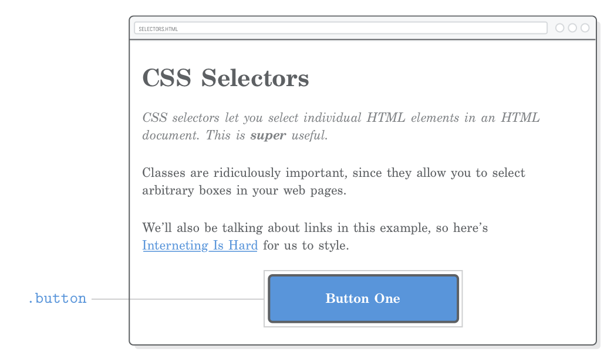
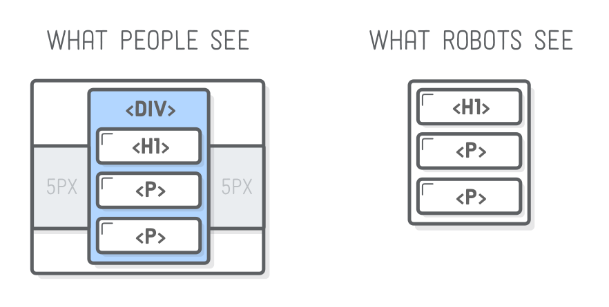
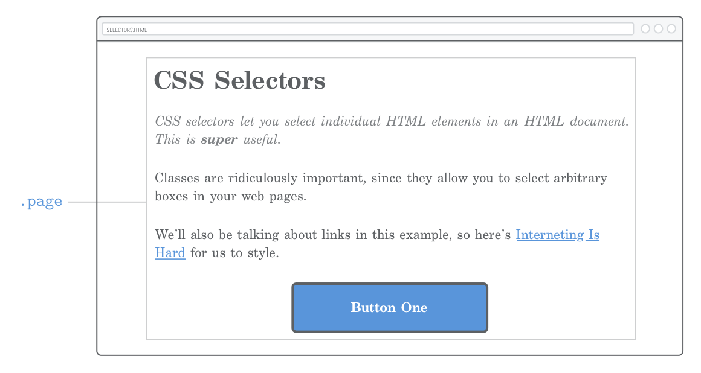
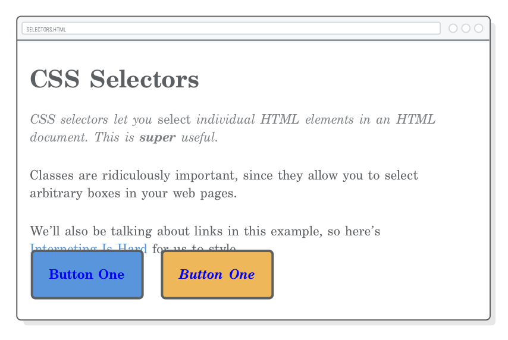
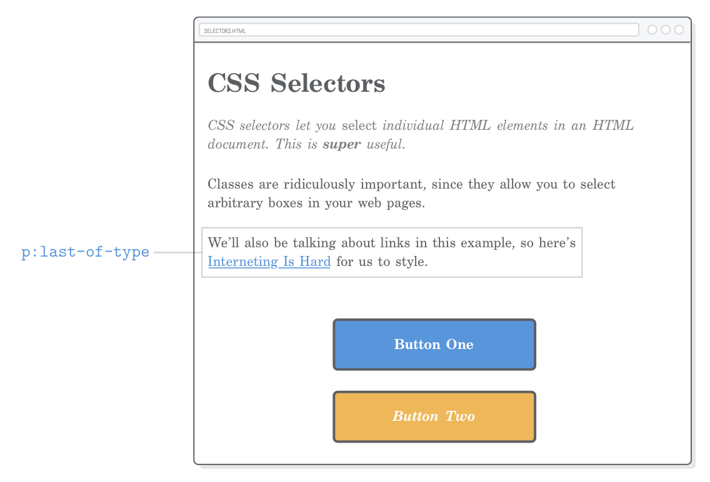
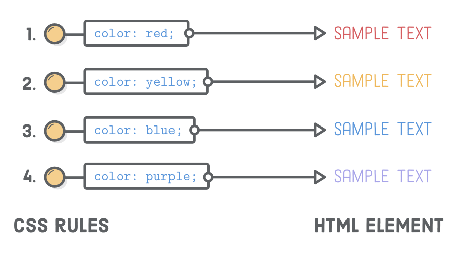

Uma introdução amigável para seleção de elementos HTML
Voltando no capítulo de
Links e Imagens nós aprendemos a concatenar um documento HTML
a outros arquivos no nosso projeto. Os “seletores CSS” são bem
parecidos, exceto que ao invés de navegar entre arquivos, eles
mapeiam regras CSS para um elemento HTML específico. Isso torna
possível estilizar seletivamente elementos enquanto
ignoramos outros.
A menos que você queira que toda seção da sua página se pareça
exatamente igual, isso é uma funcionalidade muito interessante. É
uma forma de dizer, “eu quero que esse parágrafo seja azul, e
aquele outro seja amarelo”. Até agora, todos os nossos
parágrafos tinham somente uma cor (ou era azul ou amarelo).
O único seletor CSS que vimos até o momento é chamado de “seletor
de tipo”, que casa com todos os elementos na página. Vamos ver
agora como explorar outras formas de estilizar uma página com
classes de seletores, seletores descendentes, pseudo-classes e
ID seletores.
Configuração
Vamos precisar somente de um arquivo HTML e uma folha de estilo
CSS para nosso exemplo nesse capítulo. Crie uma nova pasta chamada
css-selectors e uma nova página chamada
selectors.html com o conteúdo abaixo:
<!DOCTYPE html><htmllang='en'><head><metacharset='UTF-8'/><title>Seletores CSS</title><linkrel='stylesheet'href='styles.css'/></head><body><h1>Seletores CSS</h1><p>Seletores CSS deixam você <em>selecionar</em> elementos HTML individuais em um documento
HTML. Isso é <strong>muito</strong> útil.</p><p>Classes são ridiculamente importantes, uma vez que eles permitem você selecionar
caixas arbitrárias na sua página web.</p><p>Também iremos falar sobre âncoras nesse exemplo, então aqui está
<ahref='https://internetingishard.com'>Fazer Front é Difícil</a> para
estilizar.</p><div>Botão Um</div></body></html>
Vá em frente e crie também uma folha de estilos styles.css
na mesma pasta. Isso vai permitir que nós exploremos os seletores CSS.
Se você estiver começando nessa série de tutoriais, dê uma lida rápida
na Introdução para ver como usar o editor de texto Atom.
Seletores de Classe
Os “seletores de classe” permitem que você aplique estilos CSS em
um elemento HTML específico. Elas permitem que você diferencie
entre elementos HTML do mesmo tipo, como quando temos dois
elementos <div> no
capítulo anterior, mas só queremos estilizar um deles. Para isso
as classes de seletores precisam de duas coisa:
Um atributo classe no elemento HTML que queremos
modificar.
Uma classe seletora na folha de estilo CSS.
Podemos usar um seletor de classe para estilizar o primeiro
parágrafo da nossa página de exemplo diferentemente do resto dela.
Isso pode ser, por exemplo, a sinopse de um artigo de um jornal.
Primeiro, vamos adicionar um atributo classe ao parágrafo desejado:
<pclass='synopsis'>Seletores CSS permitem que você <em>selecione</em> elementos individuais em um documento HTML
Isto é <strong>muito</strong> útil.</p>
Agora nós podemos colocar esse
<p class='synopsis'> no nosso CSS com o seguinte
(adicione isso ao styles.css):
Esta regra só será aplicada ao elemento com a
class do atributo correspondente. E note no ponto
(.) prefixando o nome da classe. Isso vai distinguir
o seletor de classe dos outros seletores que trabalhamos
anteriormente.
Convenção na nomenclatura de Classe
A classe de atributos pode ser utilizada para (qualquer)
coisa, desde que ela case com um seletor na CSS. Como convenção,
use sempre minúsculas e hífens para espaços, como usados nos nomes
de arquivos e pastas.
Adicionar um atributo de classe não altera o
significado da semântica do seu documento HTML no
final—é somente para ligar com sua folha de estilo CSS.
No entanto, continua sendo uma boa ideia evitar nomear as classes
baseado na sua aparência. Se escolhermos nomear nossa classe como
.italic, não poderíamos fazer muito além de tornar-la
em itálico na nossa CSS sem confundir com o itálico da HTML.
Utilizar algo mais semântico como .synopsis que nos
dá mais liberdade para nossa CSS customizar como aquela sinopse é
apresentada.
Divs mais úteis
A classe de atributos não é limitada ao elemento
<p>—ela pode ser definida em
qualquer elemento HTML. Assim, agora armado com nosso
seletores de classe CSS, nossa <div> genérica
e caixa <span> do capítulo anterior pode se
tornar muito mais útil. Nós podemos estilizar ambos os elementos
individualmente assim como seções arbitrárias da nossa página web.

Vamos começar com um único elemento, recriando nosso botão do
capítulo anterior. Dessa vez vamos utilizar uma classe ao invés
do seletor div. Primeiro adicione o seguinte código
ao arquivo styles.css:
E claro, nós precisamos criar uma classe de atributo
correspondente. Mude o <div> na nossa página
selectors.html para ficar como:
<divclass='button'>Botão Um</div>
Diferente do capítulo anterior que estilizou todas as
<div>, isso permite que nós utilizemos para
outras coisas além de botões.
Conteineres Divs
Lembrem-se que a <div> não muda a semântica da
estrutura da página. Isso a torna uma ferramenta poderosa para
definir uma estrutura de apresentação da página. Ao
envolver os da HTML em elementos <div> podemos
organizar nosso site em layout orientados sem cagar em como
mecanismos de pesquisa veem o conteúdo.

Por exemplo, vamos criar um layout com largura fixa,
utilizando a técnica de margem automática que aprendemos no capítulo
passado. Primeiro, encapsule todo o documento em uma
<div> genérica e lhe dê uma única classe:
<body><divclass='page'><!-- Adicione isto --><h1>Seletores CSS</h1><pclass='synopsis'>Seletores CSS selectors permitem que você <em>selecione</em> um elemento individual em um documento HTML. Isto é <strong>muito</strong> útil.</p><p>Classes são extremamente importantes, uma
vez que elas permitem selecionar caixas arbitrárias na sua página web.
.</p><p>Também falaremos sobre os links neste exemplo, então aqui temos um
<ahref='https://internetingishard.com'>Interneting Is Hard</a> para estilizar.</p><divclass='button'>Botão Um</div></div><!-- E isto --></body>
Depois adicione o seguinte ao styles.css:
.page {
width: 600px;
margin: 0 auto;
}
Não interessa o quanto você vai aumentar ou diminuir a janela do
navegador, nossa página sempre vai ter 600 pixels de comprimento
e centralizada no espaço disponível. A gente fez o mesmo quando
centralizamos nosso botão, mas agora estamos fazendo isso com
múltiplos elementos ao mesmo tempo, ao agrupá-los em um contêiner
genérico.

É assim que layouts são definidos em páginas mais complexas. Por
agora, se nossa página tivesse uma barra lateral, nós poderíamos
aninhar todo o elemento da barra lateral em outra<div> com uma classe .sidebar.
Vamos ver isso no próximo
capítulo. No momento, a chave é que sem uma classe de
seletores para diferenciar nossos elementos
<div> nada disso seria possível.
Reutilizando Classes
A mesma classe pode ser aplicada a diferentes elementos em um único
documento HTML. Isso quer dizer que agora podemos reutilizar
declarações arbitrárias da CSS onde quisermos. Para criar um outro
botão, tudo que temos que fazer é adicionar outro elemento HTML com
a mesma classe:
Isso vai apresentar outro botão exatamente como o primeiro—
sem escrever uma única linha de CSS! Organizar elementos gráficos
similares dentro de regras CSS reutilizáveis como essa torna nossa
vida muito mais fácil como desenvolvedor web. Se nós quisermos,
vamos dizer, mudar a cor do botão, só precisamos fazer isso em um
lugar e todos os botões vão ser atualizados automaticamente.
Modificando Estilos de Classes
E se quiséssemos alterar um pouco nosso segundo botão? Felizmente,
podemos aplicar múltiplas classes ao mesmo elemento HTML.
A estilização de cada classe será aplicado ao elemento, nos dando a
oportunidade de reutilizar ambos os estilos de .button
e sobrescrever alguns deles com uma nova classe.
Vamos lá, vamos adicionar outra classe para o nosso segundo botão
com a seguinte marcação. Note como múltiplas classes convivem na
mesma classe de atributo separa por espaços:
Esse elemento agora tem duas classes separadas, e agora podemos
utilizar qualquer um dos estilos no botão. Isso nos dá algumas
possibilidades. Estilos compartilhados por ambos os botões podem
ser declarados na classe .button (como já são), e
estilos específicos ao segundo botão residirão na classe
.call-to-action (tenha certeza de adicionar isso
depois da regra .button!):
Tem algumas coisas importantes acontecendo com nosso segundo botão
agora:
Estamos adicionando uma nova declaração de
font-style a regra .button original.
Estamos sobrescrevendo um estilo de
background-color existente em .button.
A substituição ocorre por causa da ordem entre
.call-to-action e .button na nossa folha
de estilo. Quando há duas propriedades conflitantes em um arquivo
CSS, a última é sempre a que é aplicada. Então, se você mover
.call-to-action para o topo do arquivo
styles.css a regra .button será aplicada
e vai predominar sua propriedade de background-color,
mantendo o botão azul.
Isso significa que a ordem da classe de atributo no
nosso elemento HTML não tem efeito de alterar o comportamento.
Múltiplas classes em um único elemento são aplicadas de forma
“igualitária” (na falta de um termo melhor), então a precedência é
determinada somente pela ordem da regra no styles.css.
Em outras palavras, as seguintes declarações dos elementos são
equivalentes:
<!-- Essa renderização é na mesma página --><divclass='button call-to-action'>Botão Dois</div><divclass='call-to-action button'>Botão Dois</div>
Isso fica mais complicado, no entanto, quando temos prioridades na
CSS, vamos ver isso um pouco mais pra frente ainda hoje.
Seletores Descendentes
Você deve ter notado que o <em> no nosso primeiro
parágrafo não é mais distinguível no texto, uma vez que a regra de
.synopsis tornou tudo um grande itálico.
Para alterar aquele elemento <em>, nós podemos
adicionar outra classe diretamente nele, mas isso não vai gerar um
código muito fácil de manter. Queremos tratar a classe
.synopsis como é, com sua independência de componente
que não podemos estilizar inteiramente na CSS (e.x sem realizar
alterações na nossa HTML somente para estilizar alguma coisa).
É que são os “seletores descendentes". Eles deixam que você
segmente somente aqueles elementos que estão dentro de
outro elemento. Por exemplo, nós podemos tirar aquele
<em> no parágrafo .synopsis com o
seguinte código:
.synopsisem {
font-style: normal;
}
Ao adicionar essa regra no styles.css fará com que o
<em> se apresente como um caracter (romano), no
entanto diferenciando ele do itálico que nós colocamos no texto
<p> inteiro. O resto do elemento
<em> na página será sem efeito.
Seletores descendentes não são limitados aos seletores de
classe—você pode combinar qualquer outro grupo de seletores
dessa forma. Por enquanto, se nós quisermos selecionar somente os
elementos <em> dentro do cabeçalho (hs), nós
devemos utilizar algo como:
h1em {
/* Algum outro estilo */
}
De novo, o objetivo desse capítulo é deixá-lo aplicar estilos
exatamente ao elemento que quiser. Seletores descendentes são
ótimas ferramentas para esse fim. Se você quiser verificar os
seletores herdados (ou child selectors)
dê uma olhada na MDN se você ainda tiver espaço na sua caixa de ferramentas.
Não Exagere
Você pode aninhar seletores descendentes com quantos níveis você
quiser, mas não exagere. O trabalho vai ficar confuso e terrível
quando você começar a escrever regras que se parecem como essa:
/* Tente evitar fazer isso */.articleh2.subheadingem {
/* Estilos especiais */
}
Isso é menos utilizado por que casa somente com a seguinte
estrutura HTML:
<divclass='article'><h2><spanclass='.subheading'>Esse é <em>realmente</em> um texto especial</span></h2></div>
Se você quiser aplicar este estilo para um cabeçalho
<h2> que não está encapsulado no
<div class='article'>, você vai estragar isso.
Mesmo tratamento se você quiser aplicá-la para um
<h3> em qualquer lugar da página. Esse tipo de
CSS também se torna em um pesadelo de
prioridades.
Pseudo-Classes para Links
Até agora, todos os seletores CSS que vimos mapeamos diretamente
em um pedaço de marcação HTML que escrevemos. No entanto, tem
muito mais coisa acontecendo em uma página web renderizada do que
nosso conteúdo HTML. Tem um “estado” da informação sobre o que nossos usuários estão fazendo (o oposto ao conteúdo que nós
escrevemos).
O clássico exemplo é uma ligação (link). Como um desenvolvedor
web, você criou um elemento <a href> em algum
momento. Depois que o navegador renderizar isso, o usuário pode
interagir com aquela ligação. Ele pode passar o mouse sobre ele,
clicá-lo e visitar o endereço URL.
As pseudo-classes da CSS provém um mecanismo para agregar esse
tipo de informação temporária do usuário. A qualquer momento, um
elemento <a href> pode estar em um número
diferente de estado, e você pode usar pseudo-classes para estilizar
cada um deles individualmente. Pense neles como seletores de
classes que você não tem que escrever porque elas são construídas
no navegador.
Estilo Básico de Links
Pseudo-classes começam com dois pontos ( : ) seguidos do nome
desejado da classe. O mais comum para pseudo-classes de ligações
são:
:link – para links que nunca foram visitados.
:visited – para links que o usuário visitou
anteriormente.
:hover – um link que o usuário passa o mouse
por cima.
:active – um link que foi clicado pelo mouse
(ou dedo).
Vamos dar uma olhada em todos esses casos adicionando as regras CSS abaixo para nossa folha de estilo (note também o uso de
nome de cores ao invés do usual código hexas):
Se você nunca visitou o endereço
InternetingIsHard.com, deve estar
vendo um link em azul. Se não, você verá um link em púrpura.
Quando passar o mouse por cima do link, vai ver um tom de azul
água e quando clicar nele, verá vermelho.
Estado de Link Pré-clique
O código anterior é perfeito para a maioria dos sites. mas vamos
dar uma olhada com atenção no comportamento do
a:visited mudando o atributo href para
um URL que você já visitou antes. A regra do estilo
a:hover será aplicado para ambos, links visitados e
não visitados. Nós podemos refinar nossos links ainda mais, ao
juntar as pseudo-classes. Adicione isso ao código anterior:
a:visited:hover {
color: orange;
}
Isso vai criar um estilo diferenciado para links visitados e quando
passarmos o mouse por cima. A interação de passar o mouse sobre um
link não visitado muda a cor para azul claro, enquanto ao passar o
mouse por um link visitado irá mudar para laranja. Fantástico!
Exceto pelo fato de que isso vai quebrar nossa regra
a:active de estilização para algumas coisas internas
da CSS que são complicadas e que você vai desejar nunca ter lido.
Ao clicar, nosso link não vai ficar mais vermelho.
Estado de Link Visitado
Podemos corrigir isso com um a:visited:active.
Adicionando o seguinte código ao fim da nossa folha de estilo.
Note que, assim como nossa classe .call-to-action, a
ordem como isso é definida no nosso arquivo styles.css
importa:
a:visited:active {
color: red;
}
Estas duas últimas seções vão permitir que você modifique o
comportamento dos links visitados e dos não visitados. Se você não quiser modificar o estilo de links, o básico que nós já vimos é o suficiente.
Pseudo-Classes para Botões
Pseudo-classes não são somente para estilização de textos, e
links—também podem ser aplicados a qualquer seletor (não
somente aos seletores de tipos). Ao invés de estilizar um
a:link e seus amigos, vamos modificar nossa classe
.button com pseudo-classes. Isso vai permitir que criemos botões que vão para qualquer lugar.
Elementos Link, Não Elementos Div
Primeiro, precisamos modificar nosso botão para ser um elemento
<a href> ao invés de ser um elemento
<div> genérico, como mostramos abaixo:
Ao atualizar a página, você verá que perdemos o estilo do nosso
botão, mesmo utilizando a mesma classe. Isso ocorre porque o
<a> é um elemento de linha, e tem um valor de color padrão.

Precisamos mudar para um elemento do tipo block e
remover algumas das estilizações de link padrão.
Estilos de Botões
Vamos começar com as variações de :link e
:visited. Estamos utilizando um padrão similar ao que usamos na seção anterior, mas como esses são botões, queremos manter a cor de visitado e não visitado. Mudando a regra existente de .button para casar com o seguinte:
.button:link, /* Mude isto */.button:visited { /* Mude isto */display: block; /* Adicione isto */text-decoration: none; /* Adicione isto */color: #FFF; /* O resto continua o mesmo */background-color: #5995DA;
font-weight: bold;
padding: 20px;
text-align: center;
border: 2px solid #5D6063;
border-radius: 5px;
width: 200px;
margin: 20px auto;
}
veja que criamos uma nova pseudo-classe para o seletor
:link e :visited. Sem isso, nossa cor
não pode sobrescrever o padrão de estilo a:link. A
prioridades na CSS
explica o por quê disso em detalhes. Próximo, vamos tratar os
estados ao passar o mouse sobre o link (pré-clique):
Ambos os botões vão ficar com azul claro no estado de passar o
mouse sobre o link. Finalmente vamos fazer isso ficar um pouco mais
escuro quando o usuário pressionar com o mouse, usando a
pseudo-classe :active:
A melhor parte disso é que toda essa estilização definida até agora
é reutilizável. Defina uma classe .button
em qualquer elemento HTML e você tornará ela um botão
interativo.
O Outro Botão
E agora, o que fazemos com nosso outro botão? É esperado que tenha
um fundo amarelo, mas nós quebramos nosso código na seção anterior.
Nosso seletor .button:link foi mais específico que
nossa regra atual .call-to-action, então ele teve
precedência. De novo, vamos explorar isso até o final do nosso
capítulo.
Por enquanto, vamos corrigir nossa regra
.call-to-action aplicando uma pseudo-classe nela.
Substitua a regra existente pela seguinte (tenha certeza que isso vai aparecer DEPOIS do novo estilo .button):
Uma vez que nós só adicionamos uma classe
.call-to-action ao nosso segundo botão, esse será o
único que se tornará amarelo. Claro, ainda precisamos da classe
.button em ambos os elementos <a>
por que isso define o compartilhamento de estilo como o preenchimento (padding), curvatura (radius) da borda e o tamanho
da fonte.
Pseudo-Classes para Estruturas
Os estados dos links são somente um dos aspectos de pseudo-classes
(ou onde podemos utilizar). Temos
muitas outras pseudo-classes que disponibilizam informações extras sobre um elemento. Por
exemplo, a pseudo-classe :last-of-type seleciona o
último elemento de um tipo particular dos elementos pais. Isso nos
dá uma alternativa para seletores de classe para selecionar um
elemento específico.
No momento, podemos utilizar o :last-of-type para
adicionar um espaço extra depois do último parágrafo, na nossa
página de exemplo:
p:last-of-type {
margin-bottom: 50px;
}
Isso vai evitar selecionar os dois primeiros elementos
<p> sem necessitar de uma nova
class de atributo para o último parágrafo:

Podemos utilizar uma pseudo-classe :first-of-type no
lugar da nossas classe .synopsis. Substituindo a regra
.synopsis existente com o seguinte trecho, vamos ter a mesma página.
Existem prós e contras ao utilizar esse método ao invés de classes. Isso só funciona se nossas .synopsis for um
elemento <p>. Se quiséssemos criar uma sinopse
com multi-parágrafos encapsulando um monte de elementos
<p> em uma
<div class='synopsis'>, teríamos que reescrever toda nossa CSS. Por outro lado, o método das pseudo-classes nos permite estilizar elementos especificos sem ter que alterar toda a HTML. Isso nos dá uma visão clara de conteúdo e apresentação.
Considerações
Certo, o método de pseudo-classe é um pouco mais complicado. Mas
elas ainda são úteis—uma vez que você saiba os prós e contras. Os seletores :first-of-type e
:last-of-type funcionam dentro do seu elemento pai.
Dito isso, p:first-of-type seleciona o primeiro
<p> em todo contêiner de elemento.
Temos uma <div> genérica que encapsula nosso
conteúdo (.page) então isso não será um problema pra
gente. No entanto, considere o que acontece quando adicionamos ao
final do nosso elemento .page:
<divclass='sidebar'><p>If this page had a sidebar...</p><p>We’d have some problems with pseudo-classes.</p></div>
Ainda não vamos fazer um menu lateral até o
próxima capítulo, mas isso
mostra alguns problemas que podemos ter ao usar pseudo-classes para
estruturas. O primeiro elemento <p> também irá
casar com o p:first-of-type porque o escopo da
pseudo-classe é limitada ao elemento pai.
Se você quiser evitar o parágrafo do menu lateral e selecionar
somente o primeiro <p> na nossa
<div class='page'> você precisa limitar o escopo usando
seletores filho, como esse:
Tudo isso são só exemplos de como existem muitas formas de fazer
alguma coisa no mundo maravilindo da HTML e CSS.
Diferentes desenvolvedores seguem diferentes escolas de
pensamentos. Alguns como da natureza semântica das pseudo-classes,
enquanto outros vão ao extremo com classes explícitas
de atributos em cada elemento HTML.
Seletores de ID
“Seletores de ID” são uma alternativa mais rigorosa para classes
de seletores. Eles trabalham mais ou menos da mesma forma, exceto
que você só pode ter um elemento com o mesmo ID por página,
o que significa que você não pode reutilizar os estilos. Ao invés
de classes de atributos, ele precisam de um
id de atributo em qualquer elemento HTML que você
queira selecionar. Tente adicionar isso ao segundo segundo botão:
O seletor CSS correspondente deve começar com um sinal de cerquilha
(#), o oposto do ponto (.). Adicionando o
seguinte trecho ao styles.css irá mudar a cor do texto do
nosso botão amarelo:
#button-2 {
color: #5D6063; /* Cinza escuro */
}
O problema é, se nós quisermos compartilhar esse estilo com outro
botão, precisamos definir outro id único ao atributo.
E logo nossa CSS vai parecer como essa bestialidade:
/* (Isto é muito complicado de se manter) */#button-2,
#button-3,
#checkout-button,
#menu-bar-call-to-action {
color: #5D6063;
}
Por esse motivo, Seletores de ID são geralmente desencorajados. Use
Seletores por Classe!
Fragmentos de URL
Os id de atributos precisam ser únicos porque eles
servem como alvos para “fragmentos de URL”, que nós cobrimos na
nossa discussão sobre URLs. São através dos fragmentos que você
aponta o usuário para uma parte específica da nossa página web.
Eles parecem como um seletor de id, preso no fim de uma URL.
Por exemplo, se quisermos apontar o usuário para nosso segundo
botão, podemos utilizar a seguinte chamada. Note que podemos omitir
inteiramente a URL se estivermos fazendo uma ligação para uma seção
diferente na mesma página:
<!-- Da mesma página --><ahref='#button-2'>Vá para o Botão Dois</a><!-- De uma página diferente --><ahref='selectors.html#button-2'>Vá para o Botão Dois</a>
Se adicionarmos a primeira opção para nossa página
selectors.html e clicarmos nele, você verá a URL no
navegador mudar. Para pular para o segundo botão você precisará
adicionar mais algum conteúdo na página para ver o comportamento, ou
não veremos nada.
Essa é mais uma razão para evitar usar seletores de ID. Eles criam
uma dependência entre sua URL e sua folha de estilo CSS. Imagine
usar um monte de id de atributos no seu cabeçalho
assim como fragmentos de URL e id de seletores. Se você esquecer de
atualizar sua folha de estilo toda vez que editar sua seção de
URL, você vai eventualmente quebrar sua página.
Prioridades na CSS
Mais cedo falamos sobre a
importância da ordem
quando se trata de regras de CSS em uma folha de estilo externa.
Todo o resto continua igual, regras são aplicadas de cima a baixo.
Isso permite que sobrescrevamos regras de uma maneira previsível.

Infelizmente nem todos os seletores CSS são criados iguais
“Prioridades na CSS” são pesos dados para diferentes categorias
de seletores. Isso significa que certos seletores sempre
irão sobrescrever outros, independentemente de onde eles apareçam
na folha de estilo.
Vamos começar vendo onde isso não quebra. Se você adicionar
o código abaixo depois da nossa regra .call-to-action,
ele irá sobrescrever a regra background-color anterior.
Se você colocar no topo do arquivo, ele será sobrescrito depois,
então nosso botão não vai ficar vermelho. Este é o comportamento
esperado.
Agora, veja o que acontece quando nós tentamos fazer a mesma coisa
com um seletor de ID. Primeiro, vamos ter certeza de apagar o trecho
de código anterior, então tente adicionar isso antes da nossa
regra .call-to-action existente:
Seletores de ID tem uma prioridade maior que seletores por
classe, então isso vai transformar nosso segundo botão vermelho
mesmo se nós tentarmos definir o background-color com
o .call-to-action:link depois na nossa folha de estilo.
O conceito de toda “ordem importa” só funciona quando todas as
nossas regras tem a mesma prioridade.
A prioridade dos seletores que nós vimos agora é mostrada abaixo
do maior para o menor:
#button-2
.button:link
a:link and
.synopsis em (they’re
equal)
.button
a
Isso pode ser bem confuso. É como um grande problema tratado em uma
metodologia chamada “BEM”. A BEM tenta fazer que as regras da CSS sejam mais
reutilizáveis fazendo com que tudo seja uma classe de
seletores. Isso elimina completamente o potencial de problemas
específicos.
Não vamos tratar a metodologia BEM, só mostrei para demonstrar que
as regras da CSS não são necessariamente aplicadas em sequência, mas
você deve tentar fazer o navegador seguí-la escrevendo regras CSS
que utilizem a mesma prioridade.
Resumo
Neste capítulo, demonstramos com a mão na massa como usar seletores
por classe, seletores descendentes, pseudo-classes, estilização de
ligações, e seletores de ID. O objetivo disso tudo é mostrar como
manipulamos um elemento específico da HTML através da CSS. Seletores
por classe são de longe os mais versáteis e apresentam poucas
desvantagens. Como resultado, eles irão se tornar parte do seu dia a
dia como desenvolvedor.
Gostando ou não, as coisas ficaram mais complicadas neste capítulo.
Mas agora nós sabemos como fazer nossa CSS interagir com o documento
HTML e diferentes formas. Além disso, nos próximos capítulos, vamos
reparar uma dependência entre a estrutura da HTML o layout da página
web. Com toda essa interação entre CSS e HTML, pode ser difícil saber
onde começar a construir uma nova página web.
A
separação do conteúdo da apresentação
vai ajudar a guiar o processo. Você precisa primeiro do conteúdo
para depois apresentá-lo! Então o primeiro passo é realizar as
marcações no conteúdo bruto com as tags HTML. Uma vez que você já
providenciou isso, você estará pronto para adicionar atributos de
class aos seus elementos e estilizá-los, um a um.
Quando você perceber a necessidade de uma estrutura adicional para
criar um layout desejado (ex. transformar um grupo de elementos
em um barra lateral), é assim que começamos a criar conteúdos
encapsulados em <div>.
Este capítulo cobriu quase todos os seletores CSS que transformam
os sites do nosso dia a dia. Agora temos as ferramentas necessárias
para nos aprofundar muito mais no complexo mundo dos layouts CSS.
Na próxima parte do
Fazer Front é Difícil vamos aprender como criar colunas e barras laterais utilizando
a CSS Floats